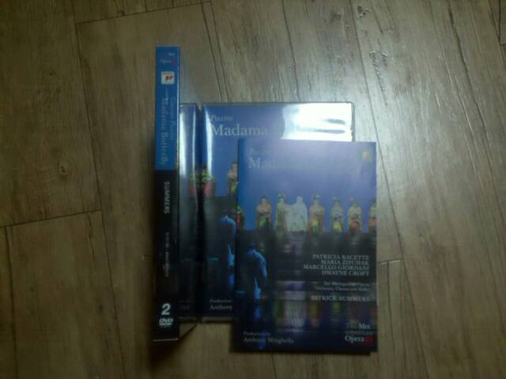
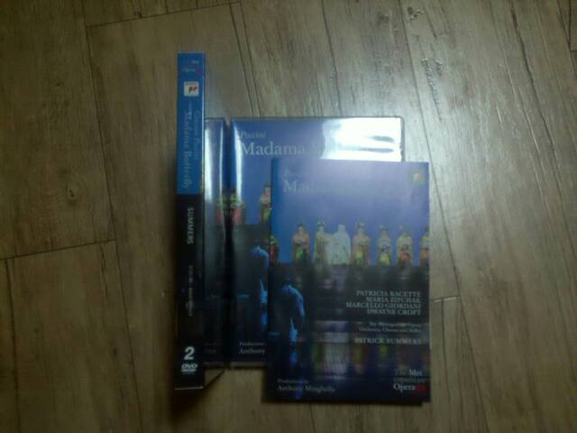

소정의 상품
7/23/2011
유월 말 경에 성남 아트센터에 콩순이 공연을 보고 나서 들고 온 아트센터 소식지를 보다가, 불현듯 여기다 독자 투고를 하면 아직 내가 한 번도 받아보지 못한 전설 속의 바로 그 "소정의 상품" 이란 걸 받을 가능성이 reasonable 한 수준에 이를 것으로 판단하여 다음 날 바로 결행한 바 있다. 그 뒤 까먹고 있다가 그제 그 흔한 "감사합니다 고갱님" 수준의 곁치례도 없이 바로 나비부인 DVD만 덜렁 택배로 왔다. 대인배 성남 아트센터 사랑해요 ㅋㅋ.

